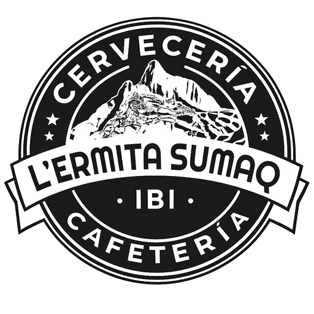
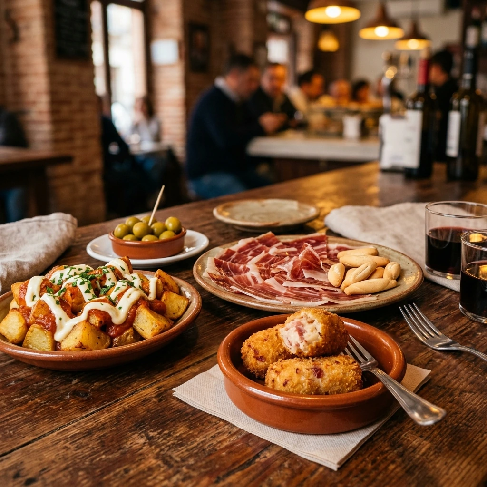
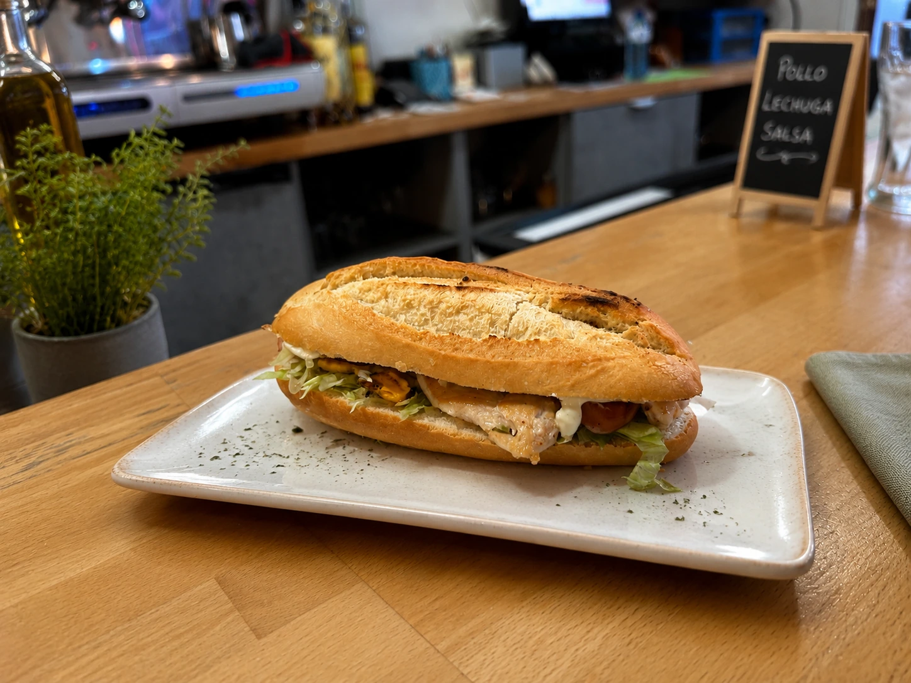
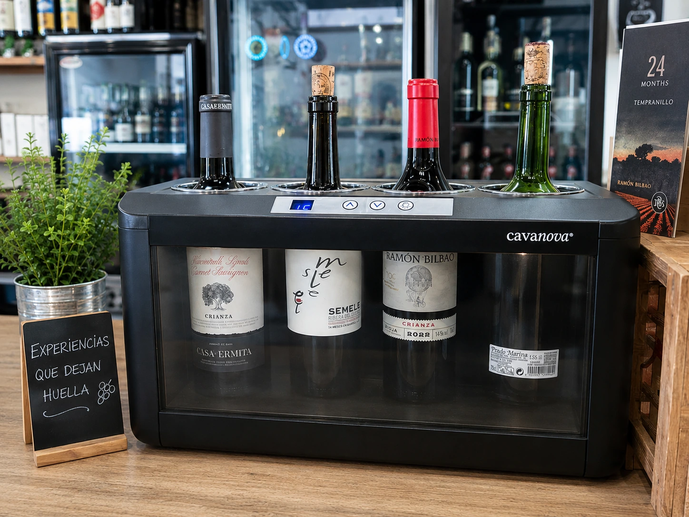

Tradición y Sabores en Ibi
Un espacio acogedor donde las tapas tradicionales de toda la vida y los bocadillos gourmet se encuentran con el espíritu cálido y familiar de L'Ermita Sumaq.
Consulta el horario habitual al pie de página.
Horario habitual de Ibi. Confirma por teléfono la apertura en festivos.
Lo que Ofrecemos
Cocina con amor, ingredientes frescos de cercanía y un servicio cercano para que te sientas como en casa.

Nuestras Tapas
Desde unas patatas bravas crujientes y albóndigas caseras hasta delicias como la carrillada al vino tinto o crujientes tequeños.
Explorar Tapas
Bocadillos de la Casa
Bocadillos XXL y especialidades únicas de la casa elaborados con pan rústico recién horneado y combinaciones irresistibles de ingredientes.
Ver Bocadillos
Vinos, Cafés y Postres
Acompaña tu comida con una cuidada selección de tintos y blancos españoles. Finaliza con nuestros postres caseros y aromáticos cafés.
Ver Bebidas e InfusionesEncuéntranos
¿Tienes alguna consulta o prefieres reservar por teléfono? Ponte en contacto con nosotros o visítanos directamente en Plaza La Foia.
Dirección
Plaza La Foia, 3, 03440 Ibi, Alicante, España